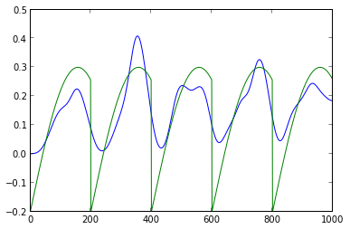
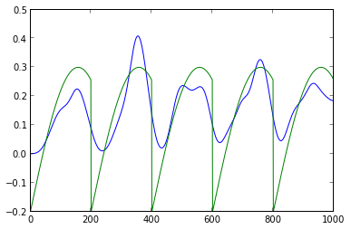
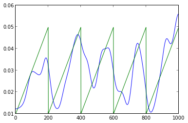
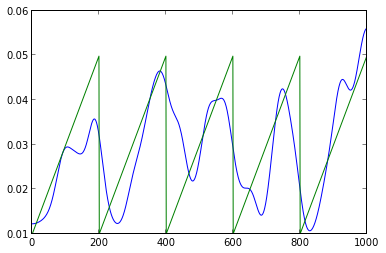

1. model Package¶
1.1. pointprocess Module¶
- class ni.model.pointprocess.PointProcess(dimensionality)[source]¶
A Point Process container.
Usually generated by loading from a file or via ni.model.pointprocess.createPoisson()
- ni.model.pointprocess.PointProcessFromSpikeTimes(times)¶
- class ni.model.pointprocess.SimpleFiringRateModel[source]¶
Uses just the firing rate as a predictor
- compare(Data, Prediction)¶
- ni.model.pointprocess.createPoisson(p, l)[source]¶
This generates a spike sequence of length l according to either a fixed firing rate p, or a repeated sequence of firing rates if type(p) == np.ndarray.
It creates a ni.model.pointprocess.PointProcess
Example 1:
p1 = ni.model.pointprocess.createPoisson(0.1,1000) p1.plotGaussed(20) plot(p1.frate)

p2 = ni.model.pointprocess.createPoisson(sin(numpy.array(range(0,200))*0.01)*0.5- 0.2,1000) p2.plot() p2.plotGaussed(10)
 
p2.plotGaussed(20) plot(p2.frate)
Example with multiple channels:
frate = (numpy.array(range(0,200))*0.001)*0.2+0.01 channels = 9 dists = [ni.model.pointprocess.createPoisson(frate,1000) for i in range(0,channels)] #for i in range(0,9): dists[i].plotGaussed(10) import itertools spks = np.array([dists[i].getCounts() for i in range(0,channels) for j in range(0,99) ]) imshow(-1*spks) set_cmap('gray')
Will generate:
(A plot of spikes)
 
ni.model.pointprocess.plotGaussed(np.array([dists[i].getCounts() for i in range(0,channels)]).mean(axis=0),20) plot(dists[0].frate)
- ni.model.pointprocess.getBinary(spikes, min_length=1)¶
Gives back a binary array from an array of spike times. The maximum for each bin is 1.
- ni.model.pointprocess.getCounts(spikes)¶
Gives back an array of spike counts from an array of spike times. If the output is suppsed to be a Binomial, use getBinary instead.
- ni.model.pointprocess.interspike_interval(spikes_a, spikes_b=False)¶
- ni.model.pointprocess.plotGaussed(data, width)[source]¶
p2 = ni.model.pointprocess.createPoisson(sin(numpy.array(range(0,200))*0.01)*0.5- 0.2,1000) p2.plot() p2.plotGaussed(10)
- ni.model.pointprocess.plotMultiSpikes(spikes)[source]¶
- spikes is a binary 2d matrix
Generates something like:

- ni.model.pointprocess.reverse_correlation(spikes_a, spikes_b=False)¶
1.2. designmatrix Module¶
- class ni.model.designmatrix.AdaptiveRateComponent(header='rate', rate=False, knots=10, length=1000, kernel=False)¶
Bases: ni.model.designmatrix.Component
Rate Design Matrix Component
header: name of the kernel component rate: a rate function that determines knots: Number of knots length: length of the component. Will be multiplied
kernel: use this kernel instead of a newly created one
- getSplines(data=[])¶
- class ni.model.designmatrix.Component(header='Undefined', kernel=0)¶
Bases: ni.tools.pickler.Picklable
Design Matrix Component
header: name of the kernel component kernel: kernel that will be tiled to fill the design matrix
- getSplines(data=[])¶
- class ni.model.designmatrix.DesignMatrix(length, width=1)[source]¶
Bases: ni.tools.pickler.Picklable
Use DesignMatrixTemplate to create a design matrix.
This class computes an actual matrix, where DesignMatrixTemplate can be saved before the matrix is instanciated.
- getMask(filt)¶
- setMask(mask)¶
- class ni.model.designmatrix.DesignMatrixTemplate(length, trial_length=0)[source]¶
Bases: ni.tools.pickler.Picklable
Most important class for Design Matrices
Uses components that are then combined into an actual design matrix:
>>> DesignMatrixTemplate(data.nr_trials * data.time_bins) >>> kernel = cs.create_splines_logspace(self.configuration.history_length, self.configuration.knot_number, 0) >>> design_template.add(designmatrix.HistoryComponent('autohistory', kernel=kernel)) >>> design_template.add(designmatrix.HistoryComponent('crosshistory'+str(2), channel=2, kernel = kernel)) >>> design_template.add(designmatrix.RateComponent('rate',self.configuration.knots_rate,trial_length)) >>> design_template.add(designmatrix.Component('constant',np.ones((1,1)))) >>> design_template.combine(data)
- combine(data)[source]¶
combines the design matrix template into an actual design matrix.
It needs an ni.Data instance for this to place the history splines.
- get(filt)¶
returns the splines of the first component, the header of which matches filt
- getIndex(filt)¶
returns the index (design matrix rows) of the component matching filt
- getMask(filt)¶
reurns the mask of the component matching filt
- get_components(filt)¶
returns all component, the header of which matches filt
- setMask(mask)¶
sets a mask (list of boolean values), which design matrix rows to use. Default is all True. If mask is shorter` than the desgin matrix, all following values are assumed True.
- class ni.model.designmatrix.HistoryComponent(header='autohistory', channel=0, history_length=100, knot_number=4, order_flag=1, kernel=False, delete_last_spline=True)¶
Bases: ni.model.designmatrix.Component
History Design Matrix Component
Will be convolved with spikes before fitting
header: name of the kernel component channel: which channel the kernel should be convolved with (default 0) history_length: length of the kernel knot_number: number of knots (will be logspaced) order_flag: default 0 (no higher order interactions)
kernel: use this kernel instead of a newly created one
Atm only order 1 interactions
- getSplines(channels=[])¶
- class ni.model.designmatrix.HistoryDesignMatrix(spikes, history_length=100, knot_number=5, order_flag=1, kernel=False)[source]¶
Internal helper class
- class ni.model.designmatrix.RateComponent(header='rate', knots=10, length=1000, kernel=False)¶
Bases: ni.model.designmatrix.Component
Rate Design Matrix Component
header: name of the kernel component knots: Number of knots length: length of the component. Will be multiplied
kernel: use this kernel instead of a newly created one
- getSplines(data=[])¶
- class ni.model.designmatrix.SecondOrderHistoryComponent(header='autohistory', channel_1=0, channel_2=0, history_length=100, knot_number=4, order_flag=1, kernel_1=False, kernel_2=False, delete_last_spline=True)¶
Bases: ni.model.designmatrix.Component
History Design Matrix Component with Second Order Kernels
Will be convolved with spikes before fitting
header: name of the kernel component channel: which channel the kernel should be convolved with (default 0) history_length: length of the kernel knot_number: number of knots (will be logspaced) order_flag: default 0 (no higher order interactions)
kernel: use this kernel instead of a newly created one
Atm only order 1 interactions
- getSplines(channels=[], get_1d_splines=False, beta=False)¶
- ni.model.designmatrix.convolve_spikes(spikes, kernel)¶
Convolves a spike train with a kernel by adding the kernel onto every spiketime.
- ni.model.designmatrix.convolve_spikes_2d(spikes_a, spikes_b, kernel_a, kernel_b)¶
Does a 2d convolution
1.3. ip Module¶
1.3.1. Inhomogeneous Pointprocess Generalized Linear Model¶
Adapted from FMTP by Robert Costa
A generalized linear model predicts a variable Y with a linear predictor and a link function. The linear predictor of the form:
\(\eta = X\cdot\beta\)
Where X is a matrix consisting of rows of values that correspond to a specific point in time of the modeled process. Each row my model a certain aspect (ie. time in trial, time after spike of some neuron) and is then weighted by the corresponding \(\beta\) parameter value. Each aspect may be scaled arbitrarily and shifted. This weighted matrix is then added up into a firing probability that is passed on to the link function.
The link function in our case of pointprocesses (ie. a poisson, bernoulli or binomial distribution, depending on notation) it is either the log or logit function (\(ln\left(\frac{\mu}{(1-\mu)}\right)\)).
Uses one of two backends ni.model.backend_glm and ni.model.backend_elasticnet
- class ni.model.ip.Configuration(c=False)[source]¶
Bases: ni.tools.pickler.Picklable
The following values are the defaults used:
self.backend = “glm”
The backend used. Valid options: “glm” and “elasticnet”self.history_length = 100
Length of the history kernelself.knot_number = 3
Number of knots in ?the history kernel?self.order_flag = 2
Something
Todo
Find out what this is
self.knots_rate = 10
Knots of the firing rate kernel (knots/second)Look at the [source] for a full list of defaults.
- class ni.model.ip.FittedModel(model)[source]¶
Bases: ni.tools.pickler.Picklable
When initialized via Model.fit() it contains a copy of the configuration, a link to the model it was fitted from and fitting parameters:
FittedModel. fit
modelFit OutputFittedModel. design
The DesignMatrix used. Use design.matrix for the actual matrix or design.get(‘...’) to extract only the rows that correspond to a keyword.- compare(data)¶
Using the model this will predict a firing probability function according to a design matrix.
Returns:
Deviance_all: dv, LogLikelihood_all: ll, Deviance: dv/nr_trials, LogLikelihood: ll/nr_trials, llf: Likelihood function over time ll: np.sum(ll)/nr_trials
- complexity¶
returns the length of the parameter vector
- dumps()¶
see ni.tools.pickler
- family_fitted_function(p)¶
only implemented family: Binomial
- firing_rate_model()¶
returns a time series which contains the rate and constant component
- generate(bins=-1)[source]¶
Generates new spike trains from the extracted staistics
This function only uses rate model and autohistory. For crosshistory dependence, use ip_generator.
bins
How many bins should be generated (should be multiples of trial_length)
- html_view()¶
- plot_firing_rate_model()¶
returns a time series which contains the rate and constant component
- plot_prototypes()¶
plots each of the components as a prototype (sum of fitted b-splines) and returns a dictionary of figures
- predict(data)[source]¶
Using the model this will predict a firing probability function according to a design matrix.
- prototypes()¶
returns a dictionary with a prototype (numpy.ndarray) per component
- pvalues_by_component()¶
returns pvalues of each component as a dictionary
- class ni.model.ip.Model(configuration=None, nr_bins=0)[source]¶
Bases: ni.tools.pickler.Picklable
- backend¶
- compare(data, p, nr_trials=1)¶
will compare a timeseries of probabilities p to a binary timeseries or Data instance data.
Returns:
Deviance_all: dv, LogLikelihood_all: ll, Deviance: dv/nr_trials, LogLikelihood: ll/nr_trials, llf: Likelihood function over time ll: np.sum(ll)/nr_trials
- dm(in_spikes, design=None)¶
Creates a design matrix from data and self.design
in_spikes ni.data.data.Data instance
design (optional) a different designmatrix.DesignMatrixTemplate
- fit(data=None, beta=None, x=None, dm=None, nr_trials=None)[source]¶
Fits the model
in_spikes ni.data.data.Data instanceexample:
from scipy.ndimage import gaussian_filter import ni model = ni.model.ip.Model(ni.model.ip.Configuration({'crosshistory':False})) data = ni.data.monkey.Data() data = data.condition(0).trial(range(int(data.nr_trials/2))) dm = model.dm(data) x = model.x(data) from sklearn import linear_model betas = [] fm = model.fit(data) betas.append(fm.beta) print "fitted." for clf in [linear_model.LinearRegression(), linear_model.RidgeCV(alphas=[0.1, 1.0, 10.0])]: clf.fit(dm,x) betas.append(clf.coef_) figure() plot(clf.coef_.transpose(),'.') title('coefficients') prediction = np.dot(dm,clf.coef_.transpose()) figure() plot(prediction) title('prediction') ll = x * log(prediction) + (len(x)-x)*log(1-prediction) figure() plot(ll) title('ll') print np.sum(ll)
- generateDesignMatrix(data, trial_length)[source]¶
generates a design matrix template. Uses meta data from data to determine number of trials and trial length.
- html_view()¶
- predict(beta, data)¶
will predict a firing probability function according to a design matrix.
- x(in_spikes)¶
converts data into a dependent variable time series, ie. it chooses the cell that was configured and extracts only this timeseries.
1.4. net_sim Module¶
The Net Simulator is divided into a Configuration, Net and a Result object.
After configuration of the network it can be instantiated by calling Net(conf) with a valid configuration conf. This creates eg. random connectivity so that the simulation with the same network can be repeated multiple times.
Todo
Add options for random number generator seeds, so that the exact same trial can be run over and over again.
c = ni.model.net_sim.SimulationConfiguration()
c.Nneur = 10
net = ni.model.net_sim.Net(c)
print net
net.plot_firing_rates()
'ni.model.net_sim' Simulation Setup
Timerange: (250, 10250)
10 channels with firing rates:
[12.815928361, 29.6328550796, 19.9415819867, 13.6710936491, 20.242131795, 11.4661487294, 11.5071338947, 10.2727521514, 24.2587596858, 13.1497981307]
Firing Rates plot

for i in range(1,11):
print i
res1 = net.simulate()
res1.plot_firing_rates()
plot(numpy.array([r.num_spikes_per_channel for r in net.results]))
plot([0]*len(net.results))

- class ni.model.net_sim.Net(config)[source]¶
The Net Simulator class. Use with an Configuration instance.
- class ni.model.net_sim.SimulationConfiguration[source]¶
Configures the simulation. The default values are:
Nneur = 100 sparse_coeff = 0.1 Trial_Time = 1000 prior_epoch = 250 Ntrials = 10 Nsec = Ntrials*Trial_Time/1000 Ntime = Nsec*1000 eps =0.1 frate_mu = 1.0/25.0 Nhist = 50 output = False rate_function = False- Nsec¶
- Ntime¶
1.5. create_design_matrix_vk Module¶
- ni.model.create_design_matrix_vk.computeCovariate(index, o, C, V1)[source]¶
Computes a row of the designMatrix corresponding to a certain covariate.
- ni.model.create_design_matrix_vk.create_design_matrix_vk(V1, o)[source]¶
Fills free rows in the current design matrix, deduced from size(mD) and len(freeCov), corresponding to a single covariate according to the spline bases of Volterra kernels. The current kernel(s) and the respective numbers of covariates that will be computed for each kernel is deduced from masterIndex by determining the position in hypothetical upper triangular part of hypercube with number of dimensions corresponding to current kernel order. Using only the ‘upper triangular part’ of the hypercube reflects the symmetry of the kernels which stems from the fact that only a single spline is used as basis function.
saves covariate information in cell array ‘covariates’, format is {kernelOrder relativePositionInKernel productTermsOfV1}
Anpassung für Gordon: masterIndex, log, C, mD, freeCov werden berechnet statt übergeben.
- ni.model.create_design_matrix_vk.detKernels(freeCov, masterIndex, oCov, mOrder, C)[source]¶
Determines from the number of free slots in Designmatrix len(freeCov) and the current masterIndex how many covariates for which Volterra coefficient can be computed. Updates model order mOrder.
- ni.model.create_design_matrix_vk.detModelOrder(masterIndex, C)[source]¶
Determines model order and corresponding number of covariates.
1.6. create_splines Module¶
- ni.model.create_splines.N(u, i, p, knots)[source]¶
Compute Spline Basis
Evaluates the spline basis of order p defined by knots at knot i and point u.
- ni.model.create_splines.augknt(knots, order)[source]¶
Augment knot sequence such that some boundary conditions are met.
- ni.model.create_splines.create_splines(length, nr_knots, remove_last_spline, fn_knots)[source]¶
Generates B-spline basis functions based on the length and number of knots of the ongoing iteration. fn_knots is a function that computes the knots.
- ni.model.create_splines.create_splines_linspace(length, nr_knots, remove_last_spline)[source]¶
Generates B-spline basis functions based on the length and number of knots of the ongoing iteration
- ni.model.create_splines.create_splines_logspace(length, nr_knots, remove_last_spline)[source]¶
Generates B-spline basis functions based on the length and number of knots of the ongoing iteration
- ni.model.create_splines.spcol(x, knots, spline_order)[source]¶
Computes the spline colocation matrix for knots in x.
The spline collocation matrix contains all m-p-1 bases defined by knots. Specifically it contains the ith basis in the ith column.
- Input:
- x: vector to evaluate the bases on knots: vector of knots spline_order: order of the spline
- Output:
- colmat: m x m-p matrix
- The colocation matrix has size m x m-p where m denotes the number of points the basis is evaluated on and p is the spline order. The colums contain the ith basis of knots evaluated on x.
1.7. backend_elasticnet Module¶
This module provides a backend to the .ip model. It wraps the sklearn.linear_model.ElasticNet / ElasticNetCV objects.